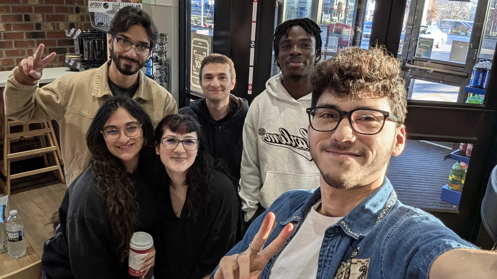
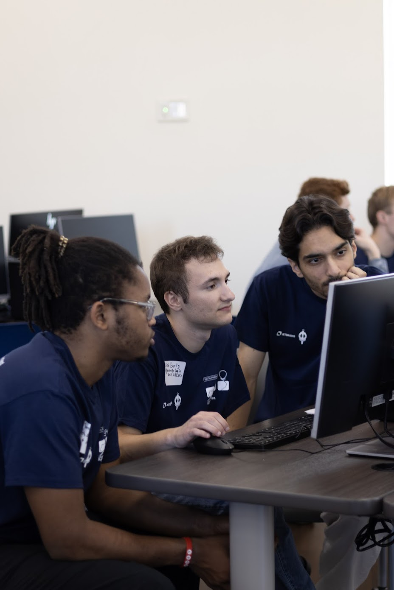
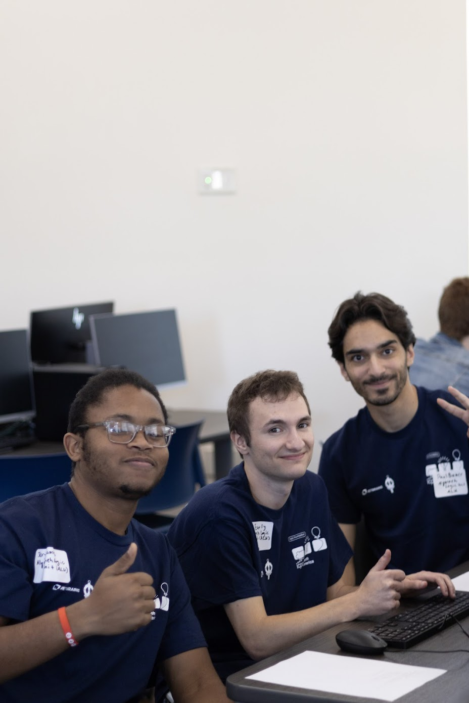
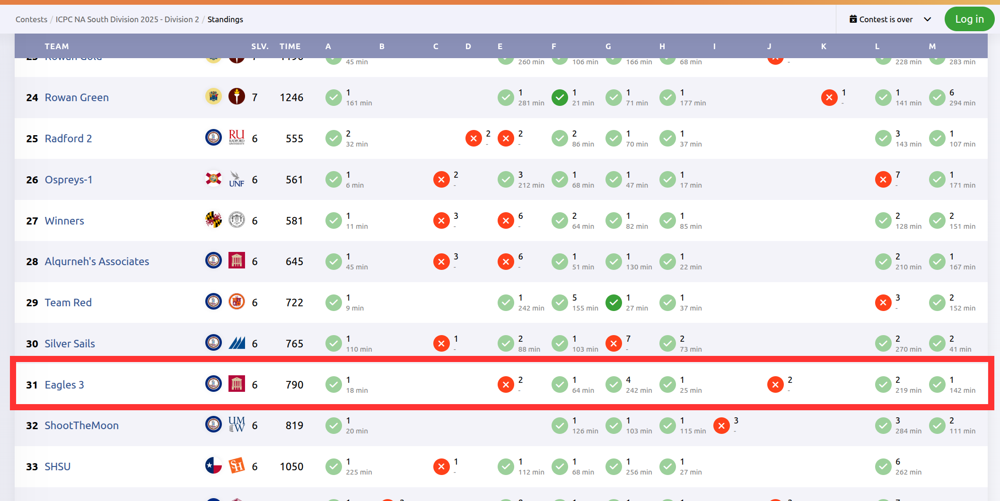
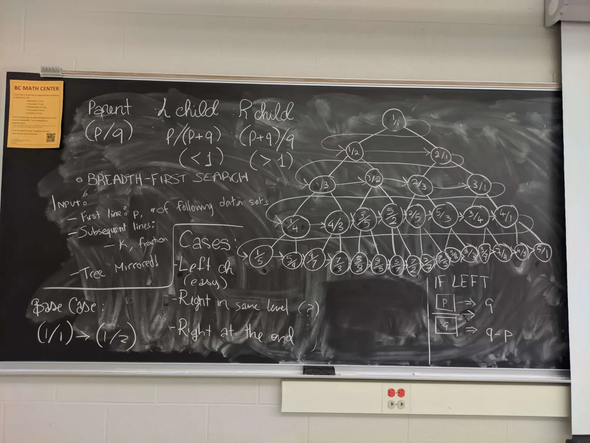
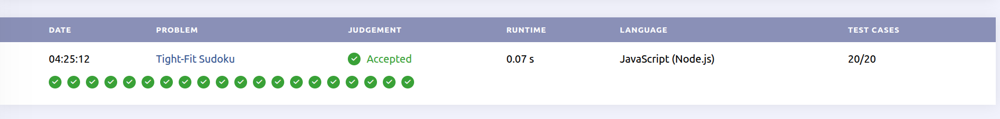
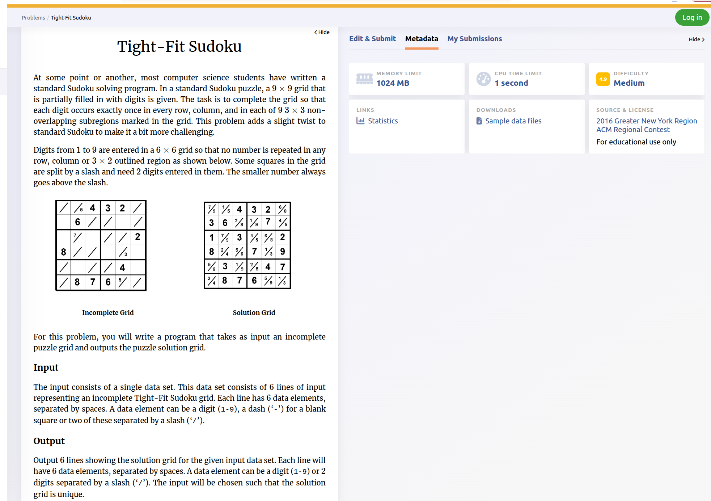
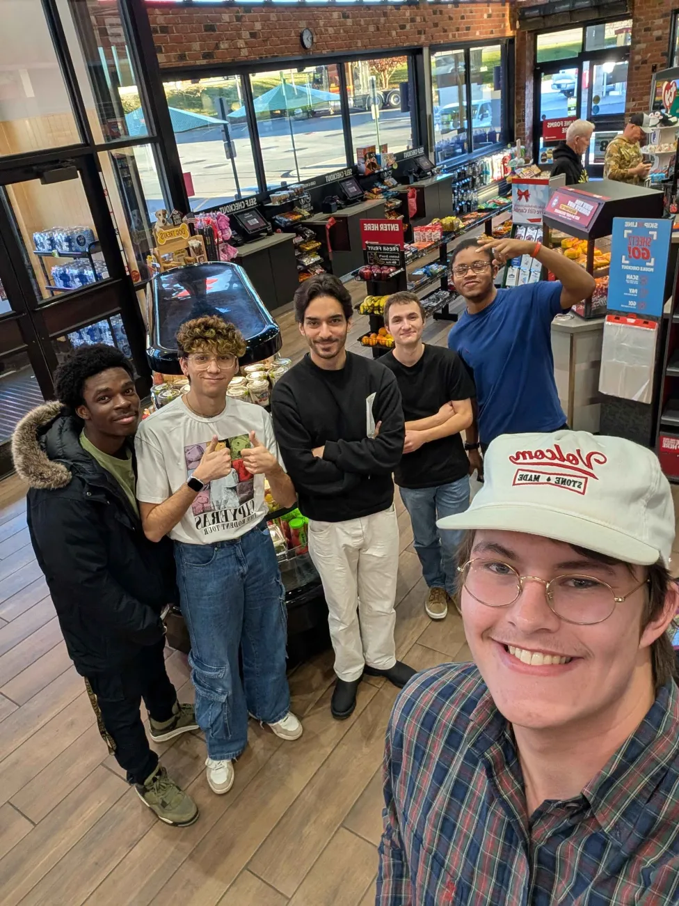
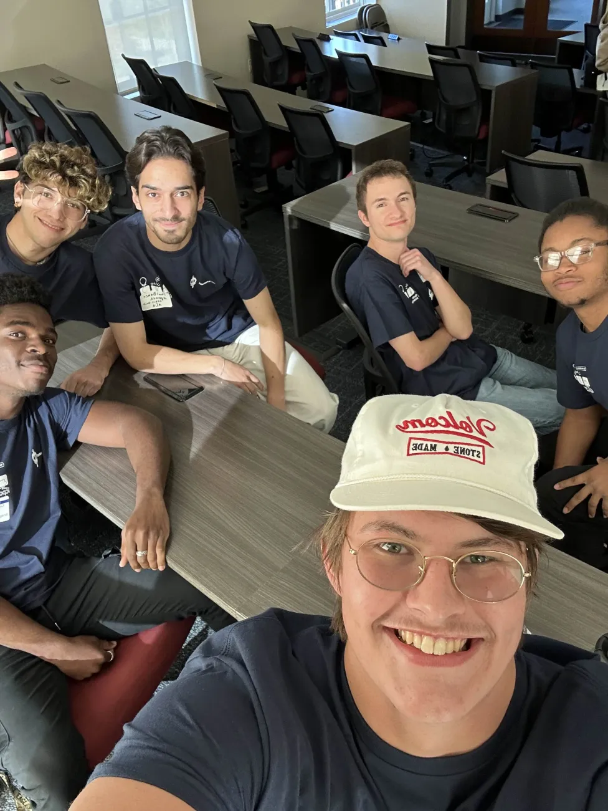
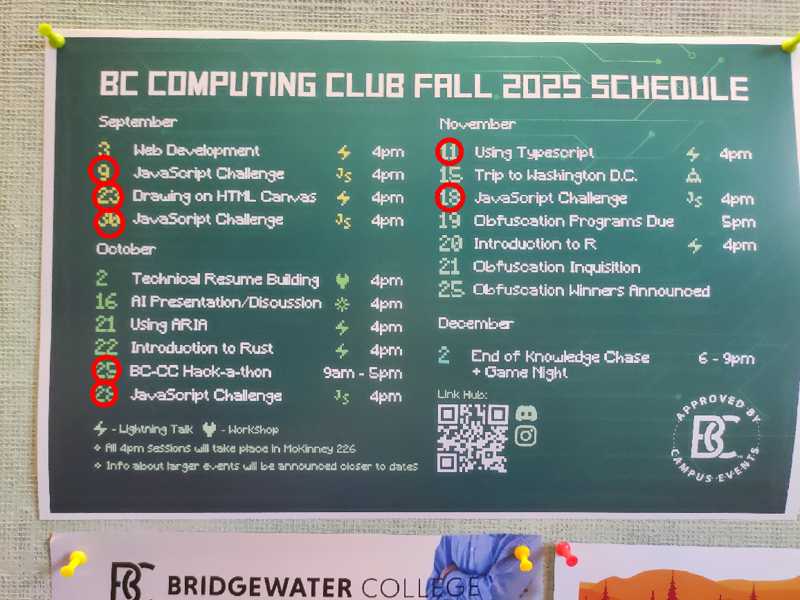
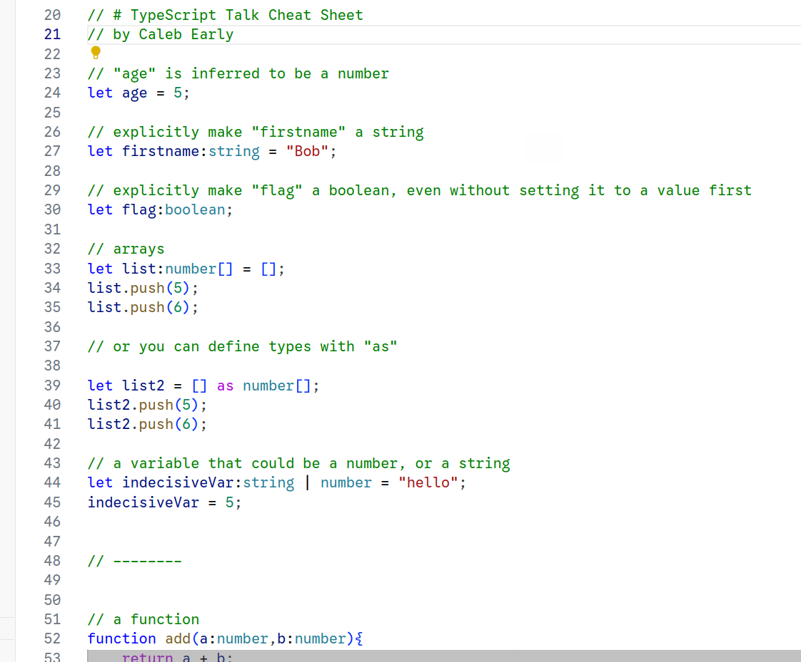
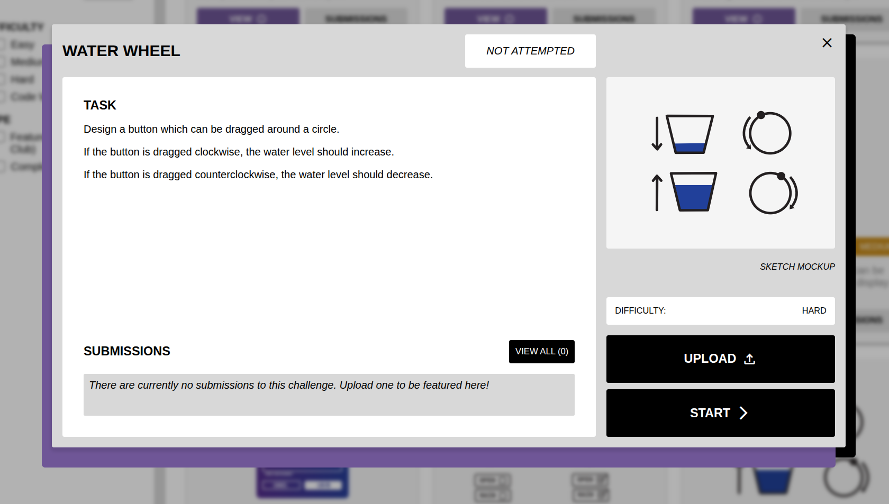
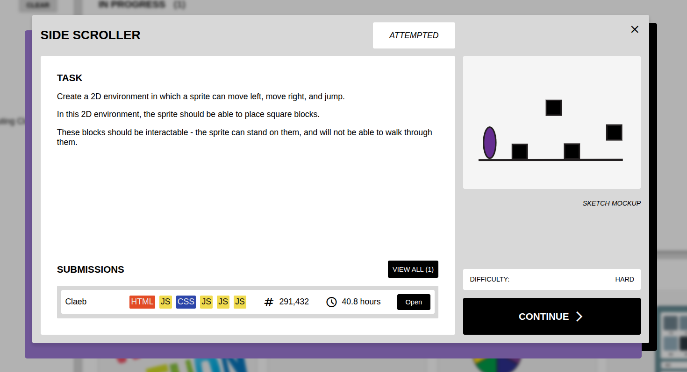
Bi-weekly club event I organized and led, encouraging creative coding and peer learning. This artifact demonstrates initiative, technical presentation skills, and community engagement.
(Videos included are my submissions to our various challenges over the course of last year)
Website (Sign-in required):
https://codeotter.dev/practice